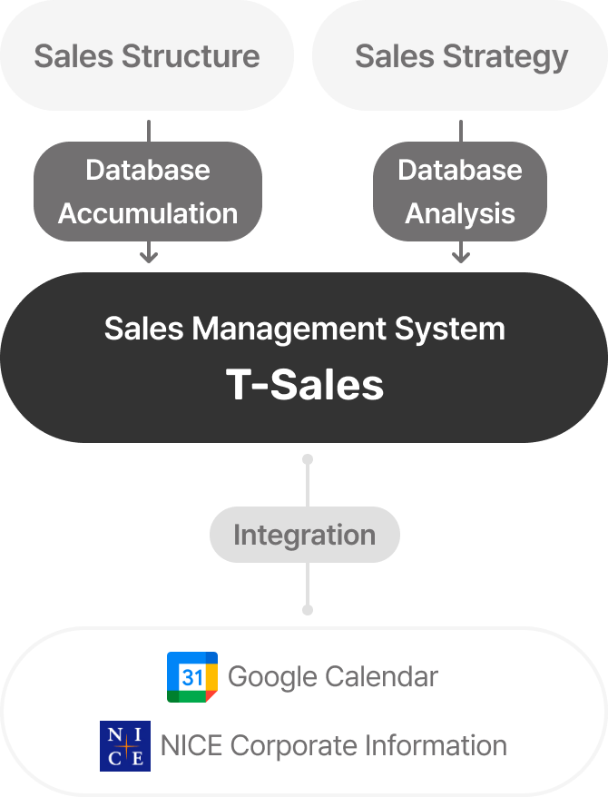

Contact center solutions
We ensure efficient communication and effective customer engagement with our cutting-edge contact center solutions, leading to enhanced efficiency and customer satisfaction in our service delivery.
-
Comprehensive CRM Solution
(Powerfront)Our comprehensive CRM solution is a client-centric, integrated CS tool designed to manage diverse customer touchpoints, from phone calls and emails to bulletin boards and chats, on a single page. By handling customer inquiries from multiple channels on one single screen with our Omni channel service, we ensure optimized efficiency in customer service by offering diverse and effective functions for contact center operations, including CS history view and inquiry type management.

Integrated CS history management CXpert CRM
-
- Call Support
- Call support history management/CTS integration
-
- Integrated CS history management
- Seamless integration and management of customer service records across various channels
-
- Chat Support
- KakaoTalk, Web Chat, LINE
-
- Client System
- Client System Client System (Requires separate development)
-
- Bulletin Board Support
- Integration of bulletin board inquiries through API
-
- Statistics and interfaces specialized for contact centers
- Statistics per advisor, inquiry type, and time interval
- KPIs: CPD, CPH, AHT, ACT, ACW
-
- Email Support
- Integration with the client company email server
-
- Multilingual support available
- English, Japanese, Korean
-
-
Speech-to-Text/Text Analysis Solution
(Transpeech)Transpeech, developed by transcosmos Korea, is a cloud-based voice recognition solution that translates call system voice data into text, enabling crucial data analysis. Leveraging the analyzed data, we provide real-time script suggestions and automatic summary of CS history, alongside a multitude of features for contact center managers including monitoring, automatic quality assessment, and Voice of Customer (VOC) analysis and management to optimize the operational efficiency of contact centers.
- Call system
- speaker diarization server
- transpeech
-
- STT (Speech To Text)
- Converts spoken words into written text
- STT engine, Acoustic model, Language model
- Transmits the final transcribed text data to the TA field
-
- TA (Text Analysis)
- Analyzes transcribed text and converts it into necessary functions
- Analytical engine(CS Assistant, Mandatory remarks self-monitoring function, Real-time CS status dashboard, Customer service quality assessment , VOC/Issue/Keyword analysis, Lexicon management, CS Assistant management, Customer service quality evaluation scorecard management, etc.)
- transpeech
- API
- client company legacy systems
-
Workforce Management (WFM) Solution
Our WFM solution, developed by transcosmos Korea, is a volume forecasting and input headcount management solution for contact centers based on our extensive experience in center operations, integrating the latest machine learning and deep learning methodologies with globally recognized predictive models. Moreover, by offering pre- and post-implementation data analysis consulting, we ensure that our clients can optimize the use of the WFM solution, including a comprehensive analysis of predictive models, outlier standards, and event impact.
-
Visual ARS Solution
Our ARS solution delivers a dual interface of voice and web screen guidance, enabling customers to navigate ARS through touch interactions. This self-help capability improves customer satisfaction and enhances consultation efficiency without the need for direct agent intervention.
-
Collaboration Tool Solution Based on Messenger
(Kakao Work)As an official reseller partner of Kakao Work, a holistic business platform, transcosmos Korea owns the official right to sell the solution and undertakes system integration projects that encompass solution implementation consulting, custom development, and customer consultation.
-
Kakao Chat Support &
KakaoTalk Channel ChatbotOur KakaoTalk Channel Chatbot, grounded in Kakao AI technology, enables self-service responses to diverse customer inquiries. Besides offering simple conversational responses, it allows diverse functionalities such as registration, reservation, and ordering. When necessary, the Chatbot can be switched to KakaoTalk Chat Support, helping customers to have a direct conversation with advisors.
-
Chat/Chatbot Solution
(T-chat)T-chat, developed with the proprietary technology of transcosmos Korea, facilitates real-time customer service on the client's website, enabling one advisor to simultaneously interact with multiple customers. Before the customer requests a connection with an advisor, the Chatbot will manage simple customer inquiries that do not necessitate advisor interaction, such as FAQs and order tracking, thereby increasing customer self-service rates.
-
Cloud-based Customer Center Solution
(Genesys Cloud)Our integrated customer center solution is founded on the Genesys Cloud platform, which is a flexible SaaS platform resilient to volatile business environments. Offering stability, scalability, convenience, and agile services via the Genesys Cloud infrastructure, we deliver superior services to our customers, fostering continuously improving and personalized customer experiences through our swift and smart solution.
-
Sales Management CRM Solution
(Salesforce Service Cloud)As the number one CRM platform worldwide, Salesforce is the trusted choice for 90% of Fortune 500 companies. The Salesforce Service Cloud is an Omni-channel service platform that provides businesses with prompt connections to consumers through diverse channels. From order management to repair and maintenance, it enables a tailored service provision for each consumer with its integrated consumer data management, as well as easy and swift checking and processing of consumer inquiries received. It can also be connected and/or expanded to the various other channels, including SMS/LMS, emails, and the CTI call system.
-
Video CS Solution
This innovative solution enables real-time bilateral communication between customers and advisors via real-time remote conversation with a video, helping advisors promptly suggest solutions and measure to customers with this solution. Customers can conveniently receive expert-level guidance without the need to physically visit a service center.
-
Visual CS Solution
This is our non-face-to-face CS solution that allows customers and advisors to view and control the same screen. It requires no separate app installation, making the consultation process more efficient by conveying desired content through both voice and visual screen, enhancing understanding and reducing the time required.
-
Contactless Authentication Solution
This is a solution for a contactless authentication process, which is a mandatory procedure when using app-based financial services. It provides a smooth transition from previously in-person processes such as account opening and loans, which require identity verification, to a non-face-to-face procedure without the need for physical presence.
-
Push Notification Solution
Our high-capacity smartphone PUSH notification dispatch solution effortlessly manages group template administration, setting up of non-delivery periods, reserved PUSH dispatch, and mobile app feature linkage in a single system. Leveraging the notification function of smartphone apps, it ensures the cost-effective management of SMS and MMS dispatches.
-
Non-Face-to-Face Video Interview Solution
With our video-recording interview system, candidates can participate in interviews without any limitations on time or physical location, while interviewers can review the recorded interview videos and also promptly notify candidates of the results via SMS.
-
Kakao Work for Universities
Kakao Work for Education is a comprehensive communication platform that not only provides educational spaces for blended learning that combines online and offline components, but also supports seamless communication between teachers and students and offers a range of valuable tools for classroom activities. As an official reseller partner of Kakao Work, transcosmos Korea carries sales authorization and manages system integration projects that encompass solution implementation consulting, custom development, and customer support.
Back-office solutions
The back-office solution of transcosmos Korea optimizes and automates office work
by simplifying the work process and enhancing productivity.
-
Office Automation RPA Solution
RPA(Robotic Process Automation) is a solution that employs robotic software to automate repetitive tasks, providing an easy and convenient implementation without the necessity for an IT infrastructure. By integrating an AI engine with predefined operational scenarios, it delivers rapid and precise task completion.
- Before RPA implementation
- Task allocation, Routine tasks (Human Resources)
- After RPA implementation
- Robot management, Routine tasks (Digital Workforce)
- Task allocation, High-value tasks (Human Resources)
- Expected Outcomes[Cost reduction(30%~50%), Optimal resource utilization, Compliance with the Labor Standards Act (52-hour per week), Enhanced productivity (2-5 times versus manual work), Smart work system, Stronger data security, A better work-life balance]
-
Request Management Solution
(T-helpdesk)transcosmos Korea offers a robust collaborative solution that is designed for clients grappling with the intricate aspects of task requests, processing, and progress tracking in a cooperative work environment, helping them conduct smoother bilateral communication. Furthermore, it enables team members to leave their opinion on the current process, share their thoughts, and promptly check the required tasks through the real-time messenger notification.
- Task Requester
- Request Submission
- Request Management System (T-helpdesk) Integration kakaowork
- Task Handler
- Request Processing
- Request Management System (T-helpdesk) Integration kakaowork
-
Sales Management CRM Solution
(Salesforce Sales Cloud)As the No.1 CRM platform worldwide, Salesforce is the trusted choice for 90% of Fortune 500 companies. With Salesforce Cloud, businesses can streamline their sales operations, minimizing repetitive tasks and centralizing the management of all sales relationships in one place. The platform enables swift and seamless communication and collaboration through tools like Chatter, Quip, and Slack, ensuring efficient coordination across every stage of the sales process. This cloud-based Sales Force Automation (SFA) platform facilitates efficient decision-making and accurate forecasting management, thereby supporting productive communication and collaboration across all stages of the sales process.
Traditional IT
-
Enterprise Management
- Applications
- Data
- Runtime
- Middleware
- Operating System
- Virtualization
- Server
- Storage
- Network
IaaS (Infrastructure as a Service)
-
Enterprise Management
- Applications
- Data
- Runtime
- Middleware
- Operating System
-
Delivered as a Service
- Virtualization
- Server
- Storage
- Network
PaaS (Platform as a Service)
-
Enterprise Management
- Applications
- Data
-
Delivered as a Service
- Runtime
- Middleware
- Operating System
- Virtualization
- Server
- Storage
- Network
SaaS (Software as a Service)
-
Delivered as a Service
- Applications
- Data
- Runtime
- Middleware
- Operating System
- Virtualization
- Server
- Storage
- Network
-
Enterprise Management
-
Sales Management Solution (T-Sales)
transcosmos Korea offers a solution that meticulously collects and manages all necessary sales data during the corporate customer sales process. Our proprietary solution offers accurate insights into sales progress stages via agenda-specific pipelines and corroborates corporate information via NICE corporate information linkage, ultimately enabling professional, trustworthy sales activities. Additionally, the compiled data provides a foundation for further data analysis to identify additional sales opportunities. Our self-developed solution, T-SALES, can be customized to suit the client’s specific environment and requirements.
- Sales Structure
- Database Accumulation
- Sales Management System (T-Sales) integration Google Calendar, NICE Corporate Information
- Sales Strategy
- Database Analysis
- Sales Management System (T-Sales) integration Google Calendar, NICE Corporate Information
Direct Mail solutions
The Direct Mail solution of transcosmos Korea enhances customer relationships
through personalized direct mail and effective marketing strategies.
-
DM Omnichannel Solution
We deliver a solution that enables synchronous content creation and dispatch across multiple platforms, including post mail, email, and mobile channels.

-
Quadient(GMC) Solution
As an official reseller partner of Quadient, transcosmos Korea provides a comprehensive suite of services, spanning from introductory consulting to system development, deployment, and customer service, for the globally recognized top-tier document creation solution.
-
NAVER Electronic Document Distribution Solution
In collaboration with NAVER's official electronic document distribution service, we offer an efficient and legally compliant solution for electronic document distribution and tracking. This digital approach to document dispatch is not only cost-effective but also environmentally friendly.
-
NAVER Personal
Authentication SolutionThis solution provides a user-friendly mobile interface for easy and convenient personal authentication.
-
Insurance Policy Management Solution
We provide a comprehensive insurance policy management service, enabling legal compliance via policy management and custom policy creation. This holistic solution, encompassing not only digital terms and conditions but also print capabilities, delivers cost efficiency as well as process optimization.
-
Physical Document Inquiry Solution
Our solution ensures the storage, retrieval, and resending of documents received by the customer via post, email, or mobile. By having the exact same document as the one that the customer currently has, this solution helps you effectively handle customer complaints and also re-send the document in real-time via the customer's preferred channel.